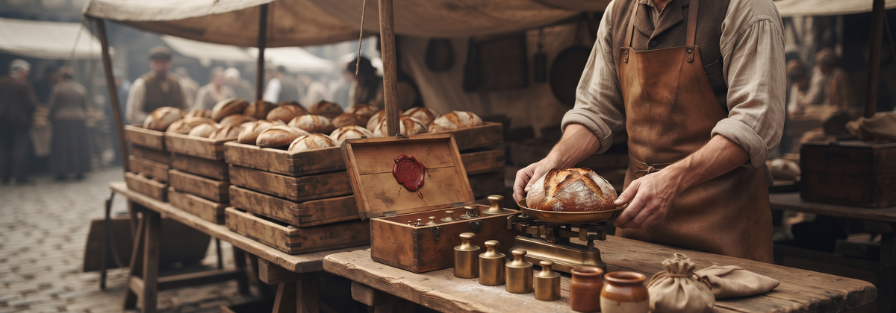

The Assize Stall. A command line validator that tries a configuration file against the JSON Schema it is handed, checks only that the file parses when none is handed, and holds one standing rule of its own about the api key.
The README's parameter list never names the positional; the first argument is the configuration file to try. A valid weighing exits 0 and an invalid one exits 1, with the reason given in the output.
Option
What it does
config_file
The JSON or YAML configuration file to validate; never named in the README's parameter list.
--schema_file
The JSON Schema to validate against, loaded as JSON. Without it, only parsing is checked.
--format
json or yaml; when omitted, inferred from the file extension.
--best_practice
Turns on the standing rule: a top level api_key equal to YOUR_API_KEY fails.

The assize stall: every loaf is tried against the same standards.
What the assize does not cover
The standing rule is exactly one test. An empty api key, the lowercase spelling, or any other weak value passes; only the exact placeholder string fails, and a configuration whose top level is not a mapping fails for that reason instead.
The GitHub description claims INI among the supported formats; the code accepts JSON and YAML only. It also speaks of predefined schemas; no schema ships with the repository, so the schema is always the operator's to supply.
The README's install section gives no dependency install step, although requirements.txt names two.
Requirements
Python, plus jsonschema 4.17.0 or later and PyYAML 6.0 or later.